UDN
Search public documentation:
MaterialEditorUserGuide
日本語訳
中国翻译
한국어
Interested in the Unreal Engine?
Visit the Unreal Technology site.
Looking for jobs and company info?
Check out the Epic games site.
Questions about support via UDN?
Contact the UDN Staff
中国翻译
한국어
Interested in the Unreal Engine?
Visit the Unreal Technology site.
Looking for jobs and company info?
Check out the Epic games site.
Questions about support via UDN?
Contact the UDN Staff
UE3 Home > Unreal Editor and Tools > Material Editor User Guide
UE3 Home > Materials & Textures > Material Editor User Guide
UE3 Home > Materials & Textures > Material Editor User Guide
Material Editor User Guide
Overview
Opening the Material Editor
Material Editor Interface
- Menu Bar
- Tool Bar
- Preview Pane - Previews the material on a mesh.
- Material Expression Graph - Material expression nodes are connected together in this pane to create shader instructions.
- Material Expressions List - A list of the available material expressions.
- Material Functions Library - A list of the available material functions.
- Properties Pane - Properties of the material or selected material expression nodes.
Menu Bar
Window
- Properties - Shows the Properties Pane.
- Preview - Shows the Preview Pane.
- Material Expressions - Shows the Material Expressions Graph.
Tool Bar
What follows is a description of each of the toolbar buttons, from left to right as they appear on the toolbar.| Icon | Description |
|---|---|
| 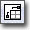 | Moves the material expression graph so that the base material node appears in the upper left corner of the main pane. |
| 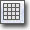 | Toggles the background grid in the material preview pane. |
| 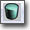 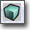 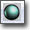 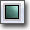 | Select from the standard shapes upon which to preview your material. |
| 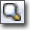 | Opens the Content Browser and selects the material. |
| 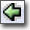 | Select a static mesh in the Content Browser and press this button to make the selected mesh the preview mesh. |
| 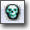 | Deletes any material expression nodes that aren't connected to the material. |
| 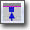 | Show/Hide material expression connectors that aren't connected to anything. |
| If enabled, update the material on the preview mesh in realtime. Disable this flag for editor performance. | |
| If enabled, update the materials in each material expression node in realtime. Disable this flag for editor performance. | |
| 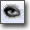 | This button is a global toggle for a material expression's bRealtimePreview flag. If enabled, the shaders of all subexpressions will be compiled every time nodes are added, deleted, connected, disconnected, or have their property values changed. Disable this flag for editor performance. See the Expression Preview section. |
| 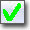 | Applies any changes made in the Material Editor to the original material and any uses of that material in the world. |
| 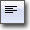 | Show/Hide material statistics in the expression graph pane. |
| Toggles display of the HLSL source for the currently selected expression. | |
| 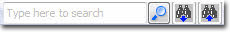 | Allows you to search the expressions for occurrences of a piece of text. See Material Expression Search for more information. |
Preview Pane
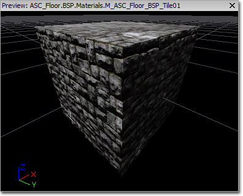 The material preview pane displays the material being edited applied to a mesh. Rotate the mesh by dragging with the left mouse button. Pan by dragging with the middle mouse button, and zoom by dragging with the right mouse button. Rotate the light direction by holding down L and dragging with the left mouse button. The preview mesh can be changed by using the associated toolbar controls (the shape buttons, "Select Preview Mesh" combo, and "Use Selected StaticMesh" button). The preview mesh is saved with the material so that the next time the material is opened in a material editor, it will be previewed on the same mesh.Properties Pane
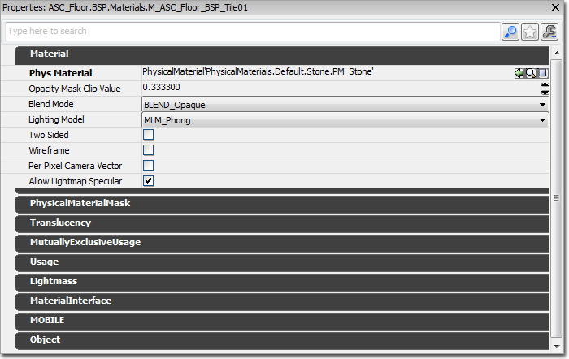 This pane contains a property window for the selected material expression(s). If no expressions are selected, the properties of the material being edited will be displayed. See Materials Overview for descriptions of all material properties.Material Expressions Pane
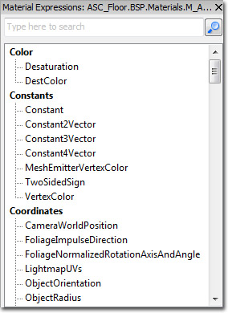 This pane contains a list of material expressions that can be placed in a material via "drag and drop". To place a new material expression node, left click on the type of expression to place, drag your cursor over to the graph pane, and release.Material Functions Library
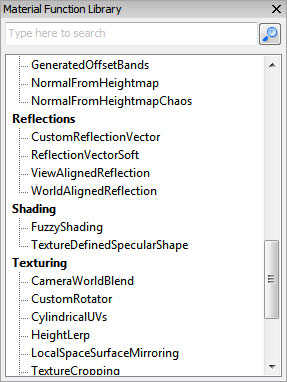 This pane contains a list of Material Functions that can be placed in a material via "drag and drop". To place a new material function, left click on the type of function to place, drag your cursor over to the graph pane, and release. A new MaterialFunctionCall node will be placed withe the appropriate material function assigned to it.Material Expression Graph Pane
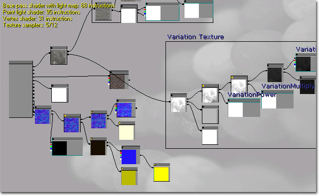 This pane contains a graph of all material expressions that belong to this material. The number of shader instructions used in the material as well as any Compiler Errors are displayed in the upper left corner. The fewer the number of instructions, the less costly the material. Material expression nodes that are not connected to the base material node do not contribute to the instruction count (cost) of the material. By default, materials contain a single material node. This node has a series of inputs, each associated with a different aspect of the material, that other expressions or networks of expressions can connect to. 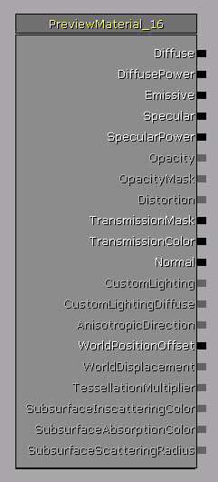 See Materials Overview for descriptions of the various inputs of the material node.Controls
Controls in the material editor generally match the controls of other tools in UnrealEd. For example, the material expression graph can be navigated as with other linked object editors, the material preview mesh can be oriented as per other mesh tools, etc.Mouse Controls
| Control | Action |
|---|---|
| LMB or RMB + Drag on background | Pan material expression graph |
| Mouse Wheel Scroll | Zoom in and out |
| LMB + RMB + Drag | Zoom in and out |
| LMB on object | Select expression/comment |
| Ctrl + LMB on object | Toggle selection of expression/comment |
| Ctrl + LMB + Drag | Move current selection/comment |
| Ctrl + Alt + LMB + Drag | Box select |
| Ctrl + Alt + Shift + Drag | Box select (add to current selection) |
| LMB + Drag on connector | Create connection (release on connector or variable) |
| LMB + Drag from connection | Move connection (release on same type connector or variable) |
| Shift + LMB on connector | Marks the connector. Performing the action again with a connector marked will create connection between the two connectors. This is a quick way of making connections over large distances. |
| RMB on background | Bring up New Expression menu |
| RMB on object | Bring up Object menu |
| RMB on connector | Bring up Object menu |
| Alt + LMB on connector | Break all connections to connector |
| Hold L + Drag (in preview pane) | Rotate the preview light direction |
Keyboard Controls
| Control | Action |
|---|---|
| Ctrl + C | Copy selected expressions |
| Ctrl + V | Paste |
| Ctrl + W | Duplicate selected objects |
| Ctrl + Y | Redo |
| Ctrl + Z | Undo |
| Delete | Delete selected objects |
| Spacebar | Force update all material expression previews |
| Enter | (same as clicking apply) |
Hotkeys
There exist hotkeys for placing commonly used material expression types. Hold down the hotkey and left click to drop in the node. The hotkeys are as follows:| Hotkey | Expression |
|---|---|
| A | Add |
| B | BumpOffset |
| C | ComponentMask |
| D | Divide |
| E | Power |
| F | MaterialFunctionCall |
| I | If |
| L | LinearInterpolate |
| M | Multiply |
| N | Normalize |
| O | OneMinus |
| P | Panner |
| R | ReflectionVector |
| S | ScalarParameter |
| T | TextureSample |
| U | TexCoord |
| V | VectorParameter |
| 1 | Constant |
| 2 | Constant2Vector |
| 3 | Constant3Vector |
| 4 | Constant4Vector |
| Shift + C | Comment |
Expression Comments
Expression Preview
Compiler Errors
Material Expression Search
| Expression Type | Searched Properties |
|---|---|
| All | Desc |
| Texture Sample | Texture |
| Parameters | ParamName |
| Comment | Text |
| FontSample | Font |
| MaterialFunctionCall | MaterialFunction |
NAME= switch with your search. For example, to find all texture samplers you could use the following search:
NAME=texture